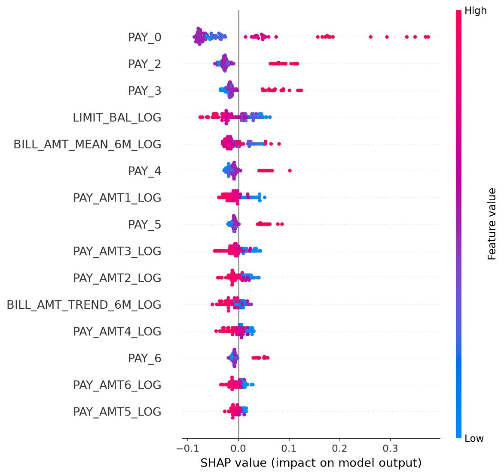
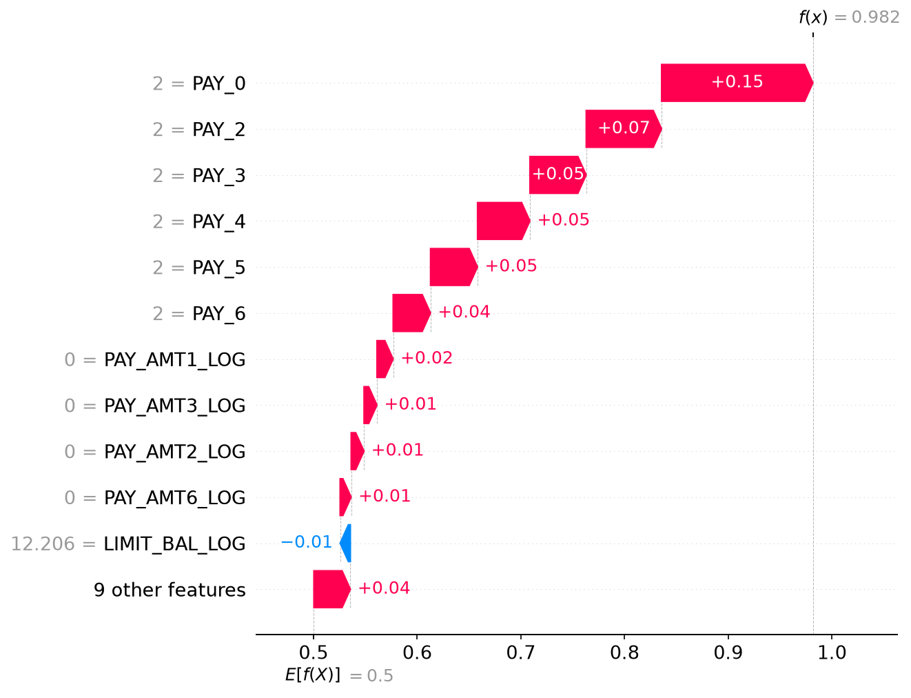
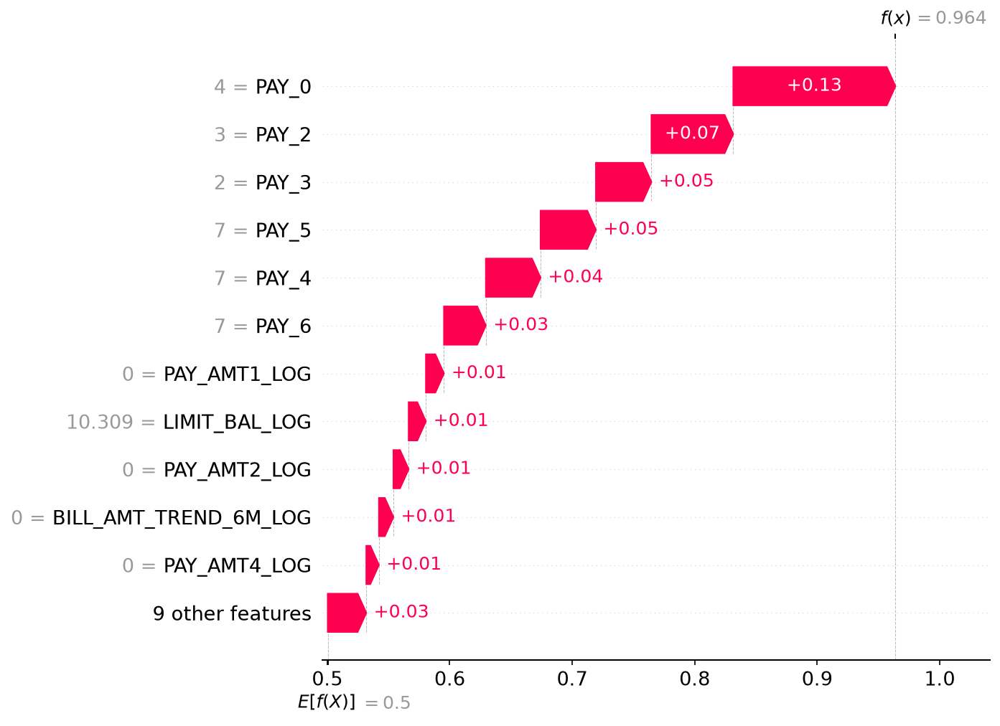

06. Interpretabilidad (SHAP y LIME)#
SHAP global (summary plot) y local (waterfall, 2 observaciones: una bien clasificada y una con error alto) para el mejor modelo identificado en 05_results_analysis.ipynb, más la comparación LIME vs. SHAP específicamente para XGBoost que pide el curso.
Trabaja desde results/experiments_master.csv (mismo patrón que 05_results_analysis.ipynb), no depende de nada en memoria de notebooks anteriores.
Show code cell source
import sys
from pathlib import Path
PROJECT_ROOT = Path.cwd().parent
if str(PROJECT_ROOT) not in sys.path:
sys.path.insert(0, str(PROJECT_ROOT))
import json
import numpy as np
from src import config
from src.data_loader import load_processed_dataset, split_features_target
from src.synthetic_data import generate_synthetic_dataset
from src.preprocessing import remove_duplicate_rows
from src.models import MODEL_REGISTRY
from src.experiment_runner import load_master_table
from src import interpretability as ip
np.random.seed(config.RANDOM_STATE)
config.FIGURES_DIR.mkdir(parents=True, exist_ok=True)
try:
df = load_processed_dataset()
except FileNotFoundError:
df = generate_synthetic_dataset()
df, _ = remove_duplicate_rows(df)
X, y = split_features_target(df)
table = load_master_table(config.EXPERIMENTS_MASTER_PATH)
if table.empty:
raise RuntimeError("La tabla maestra está vacía. Correr primero 04_run_experiments.ipynb.")
Elegir el mejor modelo y ajustar su pipeline#
El fold externo usado es el de mejor desempeño ({metric}_per_fold, ver columna persistida por nested_cv.py); SHAP/LIME se calculan sobre ESE fold de prueba.
Show code cell source
metric_for_ranking = config.DEFAULT_SCORING
best_row = table.sort_values(f"{metric_for_ranking}_mean", ascending=False).iloc[0]
best_model = best_row["model"]
best_technique = best_row["technique"]
best_method = best_row["method"]
best_params_per_fold = json.loads(best_row["best_params_per_fold"])
per_fold_metric = json.loads(best_row[f"{metric_for_ranking}_per_fold"])
best_fold_idx = int(np.argmax(per_fold_metric))
best_params = best_params_per_fold[best_fold_idx]
print(f"Mejor modelo: {best_model} | {best_technique} | {best_method} (fold {best_fold_idx})")
spec = MODEL_REGISTRY[best_model]
fitted = ip.fit_explainable_pipeline(
spec, best_technique, best_params, X, y, best_fold_idx,
n_outer_folds=int(best_row["n_outer_folds"]),
)
model_step = fitted["pipeline"].named_steps["model"]
print(f"Features post-transformación: {len(fitted['feature_names'])}")
Mejor modelo: random_forest | class_weight | genetic_deap (fold 2)
Features post-transformación: 25
SHAP global (summary plot)#
Sobre una muestra del fold de prueba (ver interpretability.DEFAULT_N_EXPLAIN, limitado por costo computacional para modelos no basados en árboles). Las columnas one-hot de SEX/EDUCATION/MARRIAGE se agregan de vuelta a la variable categórica original.
Show code cell source
n_explain = min(ip.DEFAULT_N_EXPLAIN, fitted["X_test_t"].shape[0])
shap_values, base_value = ip.compute_shap_values(
best_model, model_step, fitted["X_train_t"], fitted["X_test_t"][:n_explain]
)
agg_values, agg_names = ip.aggregate_onehot_shap(shap_values, fitted["feature_names"])
display_matrix = ip.build_aggregated_display_matrix(
fitted["X_test"].iloc[:n_explain], fitted["X_test_t"][:n_explain], fitted["feature_names"]
)
summary_path = config.FIGURES_DIR / f"shap_summary_{best_model}.png"
ip.plot_shap_summary(agg_values, display_matrix, agg_names, save_path=str(summary_path))
from IPython.display import Image, display as ipy_display
ipy_display(Image(filename=str(summary_path)))
c:\Users\valef\OneDrive\Desktop\Credit_Card_Project\src\interpretability.py:329: FutureWarning: The NumPy global RNG was seeded by calling `np.random.seed`. In a future version this function will no longer use the global RNG. Pass `rng` explicitly to opt-in to the new behaviour and silence this warning.
shap.summary_plot(

El historial de pagos domina.
PAY_0es la variable más importante, con una diferencia clara frente a las demás. Sus valores altos (meses de atraso) generan los aportes más grandes hacia default, de hasta cerca de +0.37. Le siguenPAY_2yPAY_3, y más abajoPAY_4,PAY_5yPAY_6. En todas ellas, más atraso aumenta el riesgo. Esto coincide con el EDA, con los coeficientes de la regresión logística base y con el SHAP preliminar del Random Forest.Mayor límite de crédito, menor riesgo. En
LIMIT_BAL_LOGlos valores altos (rojo) quedan a la izquierda, es decir, reducen la probabilidad de default. Esto es coherente con la diferencia de límites entre clientes con y sin default encontrada en el EDA.Montos pagados. En las variables
PAY_AMT*_LOG, los clientes que pagaron más (rojo) tienden a tener aportes negativos, o sea menor riesgo. Su efecto individual es pequeño.Facturación.
BILL_AMT_MEAN_6M_LOGaparece en quinto lugar yBILL_AMT_TREND_6M_LOGen un nivel más bajo, con un efecto moderado y menos claro que el de los pagos. Esto es consistente con el EDA, donde el monto facturado discriminaba poco entre clases.
SHAP local: una observación bien clasificada y una con error alto#
Show code cell source
y_pred_test = fitted["pipeline"].predict(fitted["X_test"])
y_proba_test = fitted["pipeline"].predict_proba(fitted["X_test"])[:, 1]
instances = ip.select_representative_instances(fitted["y_test"].to_numpy(), y_pred_test, y_proba_test)
print(instances)
for label, pos in instances.items():
x_row_t = fitted["X_test_t"][pos : pos + 1]
sv, bv = ip.compute_shap_values(best_model, model_step, fitted["X_train_t"], x_row_t)
agg_sv, agg_n = ip.aggregate_onehot_shap(sv, fitted["feature_names"])
row_display = ip.build_aggregated_display_matrix(
fitted["X_test"].iloc[pos : pos + 1], x_row_t, fitted["feature_names"]
)
waterfall_path = config.FIGURES_DIR / f"shap_waterfall_{best_model}_{label}.png"
ip.plot_shap_waterfall(agg_sv[0], bv, row_display[0], agg_n, save_path=str(waterfall_path))
print(
f"{label}: y_true={fitted['y_test'].iloc[pos]}, y_pred={y_pred_test[pos]}, "
f"proba={y_proba_test[pos]:.3f}"
)
ipy_display(Image(filename=str(waterfall_path)))
{'well_classified': 2555, 'high_error': 3936}
well_classified: y_true=1, y_pred=1, proba=0.982

high_error: y_true=0, y_pred=1, proba=0.964

Se analizaron dos clientes del pliegue de prueba. El valor base del modelo es 0.5 y cada barra indica cuánto sube o baja la probabilidad predicha.
1. Cliente bien clasificado (default real = 1, predicho = 1, probabilidad = 0.982)
Tiene un atraso de 2 meses en
PAY_0y también enPAY_2aPAY_6, es decir, atrasos en los seis meses.Las seis variables
PAYsuman cerca de +0.41, lo que explica casi todo el aumento de 0.5 a 0.982. El mayor aporte es el dePAY_0(+0.15).No registra pagos (
PAY_AMT_LOG = 0), lo que suma un poco más al riesgo.Su límite de crédito (
LIMIT_BAL_LOG= 12.206, cercano a 200,000) es el único factor que lo reduce, y solo en −0.01.
El modelo acierta con mucha seguridad porque todas las señales importantes apuntan en la misma dirección.
2. Cliente con error alto (default real = 0, predicho = 1, probabilidad = 0.964)
Es un falso positivo. Tiene atrasos en todos los meses (
PAY_0= 4,PAY_2= 3,PAY_3= 2 yPAY_4,PAY_5,PAY_6= 7) y sin pagos registrados.Las seis variables
PAYsuman cerca de +0.37, conPAY_0como mayor aporte (+0.13). Según su historial, el modelo lo considera casi seguro de caer en default.Su historial es poco habitual: los atrasos pasan de 2 a 7 meses de un mes a otro. Esto podría indicar un registro atípico o con errores, pero con estos datos no se puede confirmar.
El error no parece venir de una falla del modelo, sino de un cliente que, con ese historial, no incumplió. Esto es consistente con el ruido que ya se había detectado en el EDA: hay clientes con las mismas variables y etiquetas distintas, por lo que ningún modelo puede acertar en todos los casos.
LIME vs. SHAP (específicamente para XGBoost)#
Si el mejor modelo ya es XGBoost, esta sección reutiliza el mismo ajuste de arriba; si no, ajusta la mejor combinación de XGBoost por separado (el curso pide esta comparación puntualmente para XGBoost, más allá de cuál haya resultado ser el mejor modelo global).
Show code cell source
xgb_rows = table[table["model"] == "xgboost"]
if xgb_rows.empty:
print(
"No hay corridas de XGBoost en la tabla maestra todavía: "
"correr 04_run_experiments.ipynb incluyendo xgboost para esta sección."
)
else:
xgb_best_row = xgb_rows.sort_values(f"{metric_for_ranking}_mean", ascending=False).iloc[0]
xgb_technique = xgb_best_row["technique"]
xgb_best_params_per_fold = json.loads(xgb_best_row["best_params_per_fold"])
xgb_per_fold_metric = json.loads(xgb_best_row[f"{metric_for_ranking}_per_fold"])
xgb_fold_idx = int(np.argmax(xgb_per_fold_metric))
xgb_best_params = xgb_best_params_per_fold[xgb_fold_idx]
xgb_spec = MODEL_REGISTRY["xgboost"]
xgb_fitted = ip.fit_explainable_pipeline(
xgb_spec, xgb_technique, xgb_best_params, X, y, xgb_fold_idx,
n_outer_folds=int(xgb_best_row["n_outer_folds"]),
)
xgb_model_step = xgb_fitted["pipeline"].named_steps["model"]
xgb_y_pred = xgb_fitted["pipeline"].predict(xgb_fitted["X_test"])
xgb_y_proba = xgb_fitted["pipeline"].predict_proba(xgb_fitted["X_test"])[:, 1]
xgb_instances = ip.select_representative_instances(
xgb_fitted["y_test"].to_numpy(), xgb_y_pred, xgb_y_proba
)
pos = xgb_instances["high_error"]
x_row_t = xgb_fitted["X_test_t"][pos : pos + 1]
lime_exp = ip.explain_with_lime(
xgb_model_step, xgb_fitted["X_train_t"], xgb_fitted["feature_names"], x_row_t
)
sv, bv = ip.compute_shap_values("xgboost", xgb_model_step, xgb_fitted["X_train_t"], x_row_t)
comparison_table = ip.compare_shap_lime(sv[0], lime_exp, xgb_fitted["feature_names"])
print(f"Observación 'high_error' (XGBoost, {xgb_technique}, fold {xgb_fold_idx}):")
display(comparison_table)
Observación 'high_error' (XGBoost, class_weight, fold 2):
| feature | shap_value | lime_weight | |
|---|---|---|---|
| 0 | remainder__PAY_0 | 1.245319 | 0.091352 |
| 1 | remainder__PAY_2 | 0.314957 | 0.043534 |
| 2 | remainder__PAY_3 | 0.232570 | 0.071247 |
| 3 | remainder__PAY_6 | 0.178103 | 0.034266 |
| 4 | remainder__PAY_4 | 0.173505 | 0.056531 |
| 5 | remainder__PAY_5 | 0.133808 | 0.025168 |
| 6 | remainder__BILL_AMT_TREND_6M_LOG | 0.051481 | 0.021247 |
| 7 | remainder__BILL_AMT_MEAN_6M_LOG | -0.048345 | -0.025667 |
| 8 | remainder__LIMIT_BAL_LOG | 0.046637 | NaN |
| 9 | remainder__AGE | 0.042024 | NaN |
Discusión: ¿cuándo divergen LIME y SHAP?#
LIME ajusta un modelo sustituto LINEAL (regularizado) sobre muestras perturbadas alrededor de la observación, ponderadas por cercanía: una aproximación local cuya validez depende del ancho del kernel y el número de muestras perturbadas.
SHAP calcula valores de Shapley (teoría de juegos cooperativos): el aporte marginal promedio de cada feature sobre todas las coaliciones posibles. Para árboles,
TreeExplainerlos calcula de forma EXACTA, y satisface axiomas de consistencia que LIME no garantiza.
Divergen quando:
Features correlacionadas (ej. el bloque
BILL_AMT1-BILL_AMT6, VIF alto según el EDA): SHAP reparte el crédito entre ellas; LIME (Lasso) puede anular una y sobre-atribuir a la otra.No linealidad local fuerte (ej. el efecto no lineal de
PAY_0que el EDA ya detectó): un sustituto lineal como el de LIME la aproxima mal; SHAP (exacto para árboles) la sigue reflejando correctamente.Sensibilidad a hiperparámetros de LIME (ancho del kernel, nº de muestras): puede cambiar el ranking entre corridas; SHAP/TreeExplainer es determinístico.